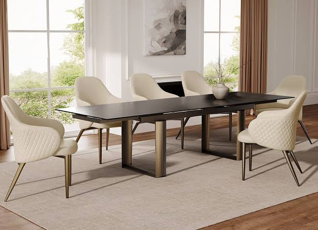
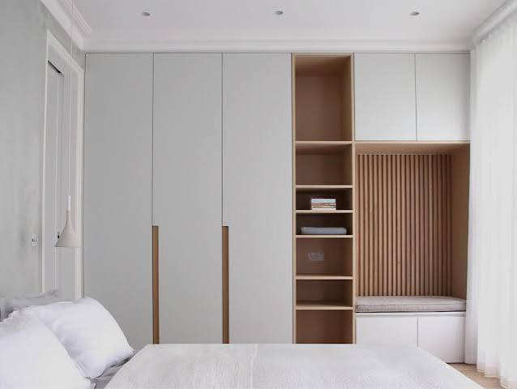
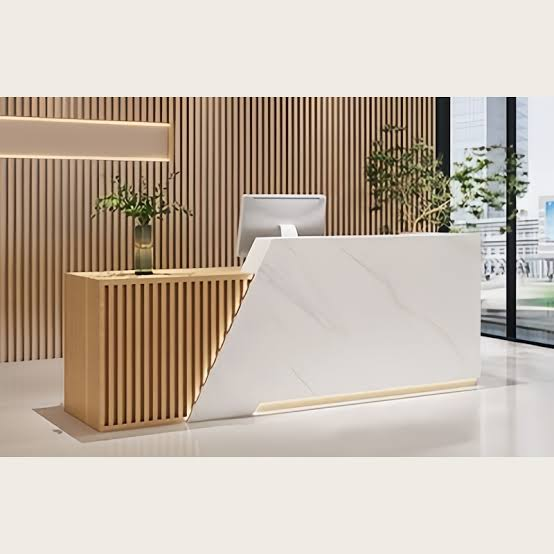

Recent projects
- Family dining table
-
A solid oak table for a family of eight, with a leaf that folds away when the room is needed for other things.

- Fitted wardrobe
-
A floor-to-ceiling wardrobe for a narrow bedroom, with sliding doors so nothing sticks out into the room.

- Clinic reception desk
-
A curved reception desk for a small clinic, finished with a hard-wearing, easy-to-clean surface.
